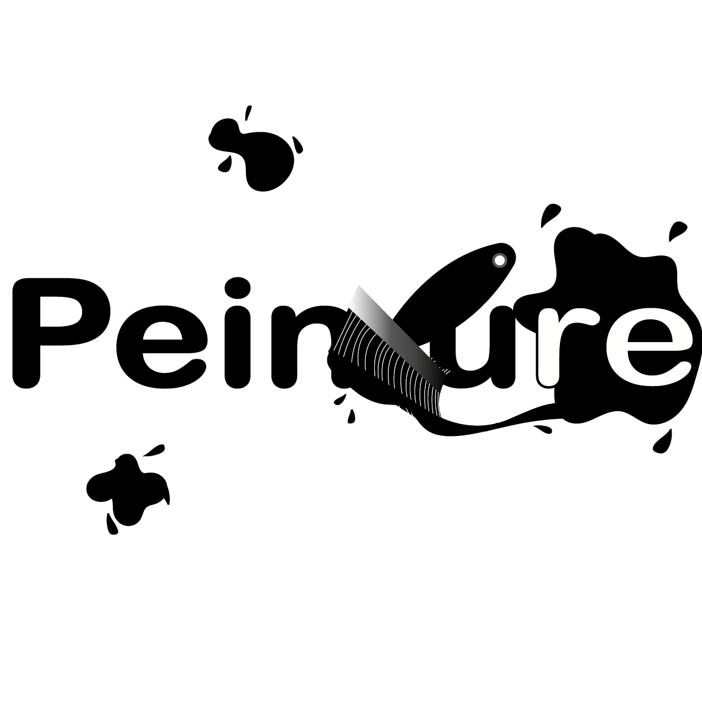
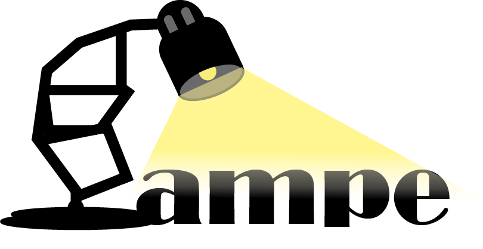
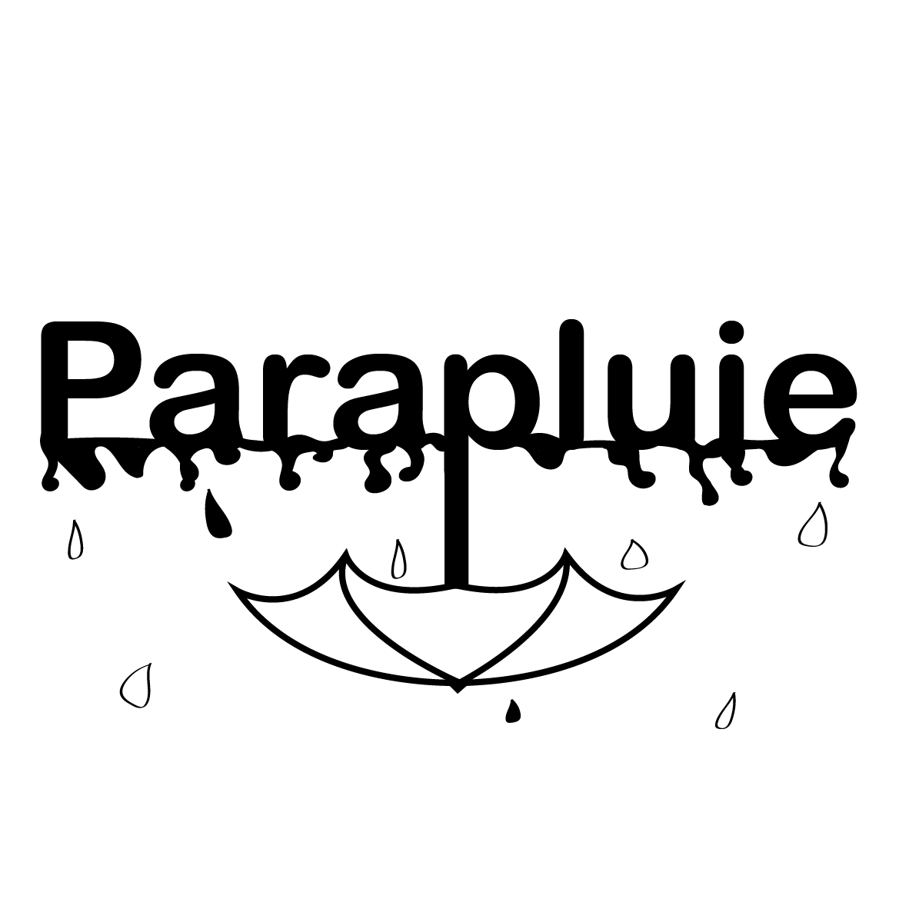

Ici le but était de m'initier au graphisme et plus
précisément au Mockup en créant des stickers sur un dessin
animé amusant connu de tous : Garfield !
NB : ici les traits ne sont pas toujours droits, non pas
que j'ai la bougeotte mais il était essentiel de faire
cela en un temps restreint et surtout de le faire avec
seulement un modèle rien de plus ;)
L'art des mots
Les mots peuvent être images c'est ce que représentes ces
créations. Ici c'est encore de l'initiation au maniements
des outils à ma disposition mais cela à l'aide de mon
esprit et de mes idées.



Photographie
Etant une fervente admiratrice de l'art de la
photographie, je me prête de temps à autre au jeu. Ici
dans le cadre d'une exposition organisée pendant mon
parcours scolaire, je suis de nouveau passée derrière
l'objectif. Le temps est une représentation propre à
chacun, ici le reflet de la trace du temps sur les lieux
et sur l'architecture qui nous entoure est reflétée par
ses images, mais pas seulement...
repenser un storytelling
S'essayer au montage vidéo n'est pas chose aisée et c'est
un défi que je ne cesse de relever ! Ici en remodelant le
storytelling du teasing du célèbre festival Coachella.
Parler à travers les images, le son, les sentiments
retransmis et non des mots, voilà un travail peu aisé !
Devenir professionnel
Dans le cadre de mon parcours scolaire il a fallu faire
preuve de créativité en imaginant un scénario rendant
compte de notre approche de l'école et de la manière dont
une année en son seing nous a fait grandir et prendre en
professionnalisme. Quoi de mieux pour relater la réalité
que la preuve en image ? C'est ce que mon équipe et
moi-même avons réalisé à travers une vidéo où nous étions
seul maître à bord de ce projet. Entre écriture du
storytelling, jeu d'acteur, réalisation, montage vidéo,
.etc. nous avions matière à tisser.